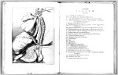

Johan van Horne, Novus ductus chyliferus, nunc primum delineatus, descriptus et eruditorum examini expositus. Lugduni Batavorum, e typographeo Francisci Hackii, 1652. -- (518 F 17)
Johannes van Horne (1621-1670) studeerde medicijnen te Leiden, waar hij zijn leermeester Johannes Walaeus bijstond in diens onderzoekingen van de bloedsomloop. In 1643 vertrok hij naar Italië -- waar hij te Padua promoveerde --, Zwitserland, Frankrijk en Engeland. In 1651 in Leiden teruggekeerd, vroeg hij aan de curatoren van de universiteit verlof te mogen doceren. Onmiddellijk werd hij tot buitengewoon hoogleraar in de anatomie benoemd en een jaar later, toen hij deze functie nog bekleedde (in 1653 werd hij benoemd tot hoogleraar in de anatomie en chirurgie), publiceerde hij een afbeelding van de borst- of chylusbuis bij de mens. Deze was in 1647 door Jean Pecquet beschreven, maar de ligging van de menselijke borstbuis was nog niet bekend. Van Horne bestudeerde de gang van de chylus. Evenals Aselli (zie nummer 74), geloofde hij, aansluitend bij de Galenische traditie, dat de melkachtige vloeistof die zich na voedselopname in de chylvaten bevond, werd opgenomen door de lever. Door experimenten op honden kon hij echter aantonen dat de ‘chylus’ uiteindelijk direct terechtkwam in het bloed, en wel via de ‘ductus chyliferus’. Van Horne had nog geen inzicht in de samenhang van het chylussysteem met het lymfe- of watervatstelsel.
Op de afbeelding is de borstbuis terug te vinden onder de letters HH en de verklaring van de plaat bij deze letters luidt in vertaling: ‘Nieuwe "chylus" vervoerende buis door de lengte van de borstkas opstijgend.’